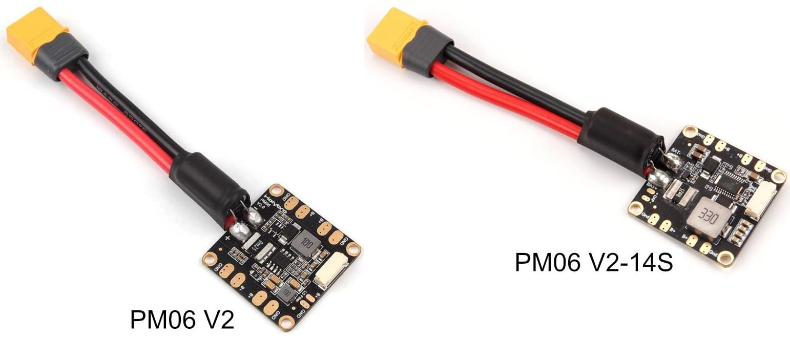
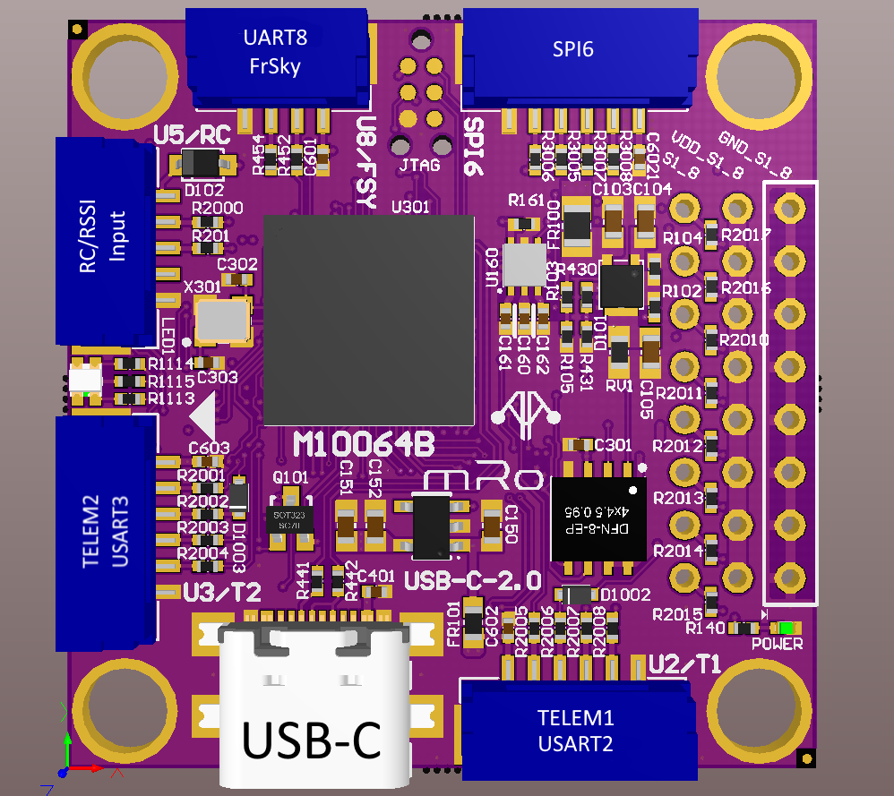

Wiring Connections
Power Module
Holybro Micro Power Module (PM06)
Information for QGroundControl Power setting:
- Voltage Divider: 18.182
- Amperes per Volt: 36.364

Solder the motors to the power module and connect a wire to power the flight controller.
Flight Controller
Pixhawk 6C Mini Connections:
| Wire/Device | Pixhawk Port |
|---|---|
| Power module | Power |
| Motors | 1, 2 ,3 4 (I/O PWM OUT [MAIN] in order) |
| Telemetry radio | TELEM1 |
| Companion computer | TELEM2 |
| Receiver | PPM/SBUS RC |
| GPS | gps2 |
Holybro port diagram: Pixhawk 6C Mini Ports | Holybro
Pixracer Pro Connections:
| Wire/Device | PixracerPro Port |
|---|---|
| Power module | Power |
| Motors | 1, 2 ,3 4 (I/O PWM OUT [MAIN] in order) |
| Telemetry radio | serial 1 (Telem 1) |
| Companion computer | serial 2 (Telem 2) |
| Receiver/Radio | rc_input |
| GPS | gps2 |
Resources:
- Ardupilot documentation: Pixracer Pro - Plane documentation
- mRo documentation: Pixracer Pro | User Guides
- This might help: PixRacer - Software, Firmware and Connections

Top view of PixracerPro (Notice the arrow points forward)

Bottom view of PixracerPro
Companion Computer
The Raspberry Pi needs 5V and 2A. It can't get this from the flight controller because although the voltage is 5V the current is not sufficient.
Needs a seperate power supply directly from the battery. Use a UBEC to step down the voltage to power the RPi.